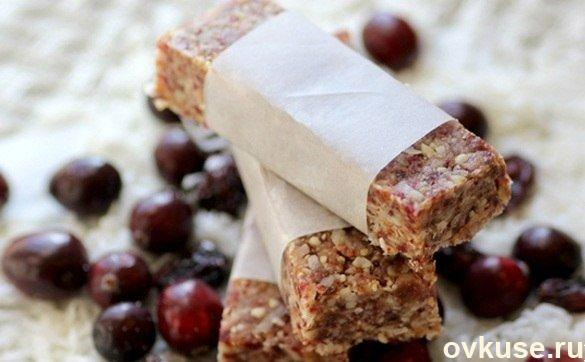
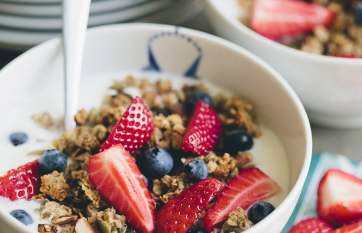

Веганские рецепты
Включите музыку, готовить будет веселее :)
Энергетические батончики

Ингридиенты
- 1,5 г стакана овсяных хлопьев (быстрого приготовления)
- 3/4 стакана цельного миндаля
- 1/2 стакана сушеной черники
- 1/2 стакана изюма
- 1/3 стакана льняного семени
- 1/3 стакана чернослива
- 1/3 стакана грецких орехов
- 1/4 стакана семян подсолнечника
- 2/3 стакана кленового сиропа (можно заменить жидким медом)
- 1/4 стакана яблочного пюре без сахара,
- 1/2 стакана миндального масла
Приготовление
- Выстелить прямоугольную форму бумагой для выпечки (так, чтобы она покрывала стенки).
- Соединить первые 8 ингредиентов, перемешать.
- Соединить сироп (мед) с яблочным пюре, смешать до однородной консистенции.
- Соединить с маслом
- Влить в сухие ингредиенты, все тщательно перемешать.
- Выложить тесто в подготовленную форму, распределив его как можно ровнее и плотнее, и поставить в морозильную камеру на час.
- Готовую плитку разрезать на 20 порционных частей.
Банановая гранола

Ингридиенты
- 250 г / 700 мл овсяных хлопьев
- 1/2 стакана / 80 г миндаля, крупно нарезанного
- 1/2 стакана / 80 г семян тыквы
- 1/4 чайной ложки ванили
- 1 щепотка морской соли
- 3 столовые ложки кокосового или оливкового масла
- 3 столовые ложки кленового сиропа или меда
- 2 спелых банана, очищенных и разрезанных на мелкие кусочки
Приготовление
- Разогрейте духовку до 200 ° C и застелите лист для выпечки пергаментом.
- В большой миске смешайте овес, миндаль, семена тыквы, ваниль и соль.
- В отдельной миске смешайте кокосовое или оливковое масло, кленовый сироп и бананы, аккуратно перемешайте все рукой до однородной массы.
- Добавьте банановую смесь в сухую смесь и хорошо перемешайте руками, около минуты.
- Выложите и распределите получившуюся массу ровным слоем на противень. Поставьте в духовку и выпекайте в течение 15 до 20 минут. Через 10 минут помешайте гранолу деревянной ложкой.
- Дайте полностью остыть, прежде чем положить в контейнер.
- Подавать можно с йогуртом, миндальным молоком, со свежими фруктами.
А теперь посмотрим видео о том, как правильно приготовить энергетические батончики.
Поиск по странице:
Введите слово или фразу для поиска.